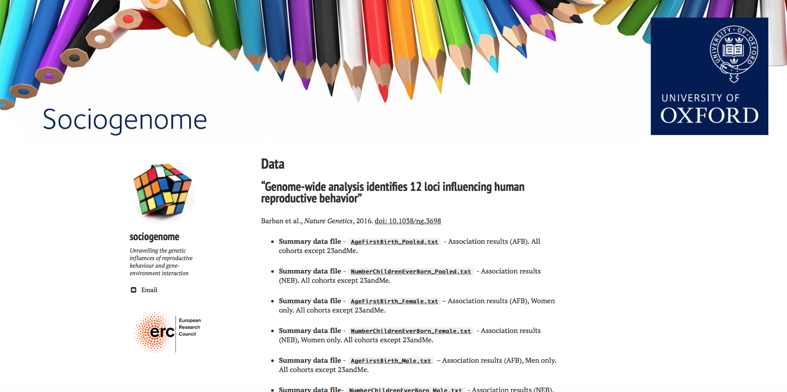
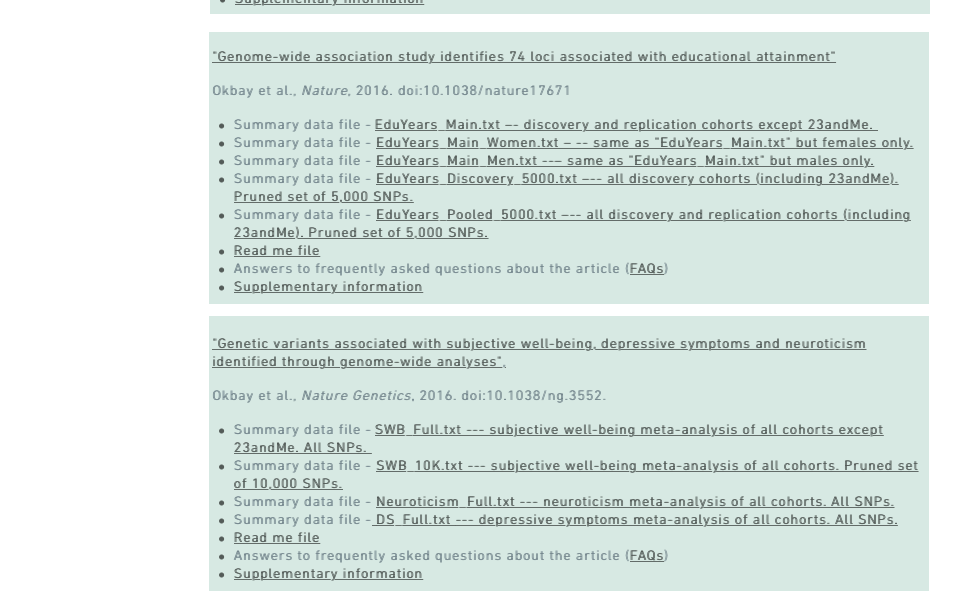
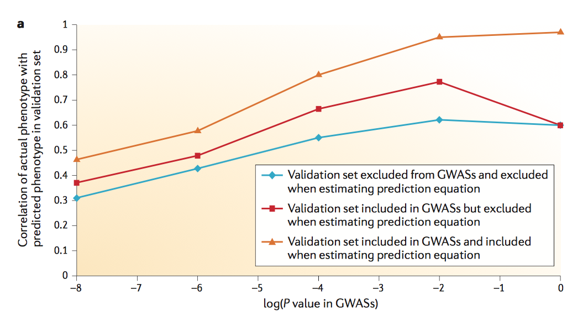
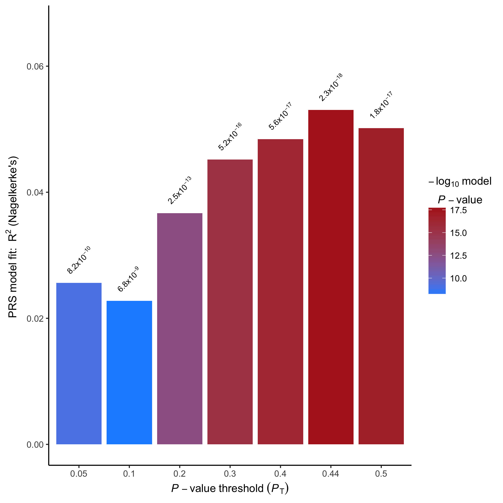
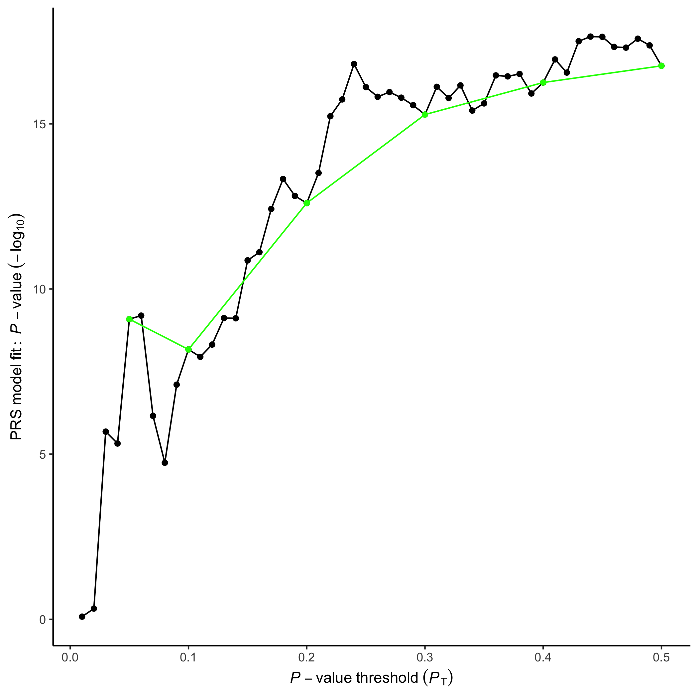

# Computer Session 4: How to calculate polygenic scores
## [Oxford NCRM Summer School](http://www.oxfordsociogenetics.com):
### An introduction to combining social science and molecular genetic research
 

nicola.barban@nuffield.ox.ac.uk


---


# Outline

## In this computer lab we will learn how to ... 
1. Use plink to calculate a genetic score
2. How to select how many SNPs we want to include in the score
3. How to define weights that are going to be used in the score
4. Calculate a polygenic score with PRSice
5. Export the data in R or Stata to conduct additional analysis


---

# Before we start 
* Download the data folder here: [data3](data3.zip)
* Set up working directory
```
	pwd
	mkdir session4
	cd session4
```

* Copy the data folder in your *session3* directory
* Check the content of data folder	
```
	ls data/

```

* Copy plink in your working directory	*the plink version in the data folder is plink for mac. Please substitute it with the one for your Os*
```
	cp data/plink  ./
	./plink
```
---
# What is a Polygenic score?

* An index that linearly aggregates the estimated effects of individual SNPs on the trait of interest.
*  Can be considered a measure of an individual’s genetic propensity towards a trait.
* In general, a polygenic score for an individual is defined as a weighted sum of a persons genotypes at J loci,


 where x is individual *i* 's genotype (0,1,2) at variant *j* and *w* is some sort of weight we can use to construct our scores

---

# What do we need?

* Access to individual-level genotype data of a prediction sample
* GWAS summary statistics from a discovery sample

### For example: [Sociogenome](http://www.sociogenome.com/data/)


---

# Other examples


* Educational Attainment (Nature, 2016)
* Subjective Wellbeing (Nature Genetics, 2016)

### For example: [SSGAC](https://www.thessgac.org/data)


---


# How polygenic scores differ?

### 1. how to generate the weights *w* ,
### 2. how to determine which  *J* loci to include.

---

# Attention! 

### Remember to use summary statistics from a meta-analysis that **does not include** the genotype data you are using.

[Wray et al. 2013](https://www.nature.com/nrg/journal/v14/n7/pdf/nrg3457.pdf)




---


# A very basic polygenic score

* based on on one SNP only **J=1**.
* No weights used, **w=1**.

# rs9930506 SNP, FTO gene.

```bash
grep rs9930506 data/hapmap3-r2_b36_CEU.bim 

16	rs9930506	0	52387966	G	A
 
cat data/FTOscore.txt
rs9930506 G 1

./plink  --bfile data/hapmap3-r2_b36_CEU \
		 --score  data/FTOscore.txt sum \
		 --out  rs9930506score
		 	

```

---
# rs9930506 SNP
```bash

less rs9930506score.log

PLINK v1.90b4.3 64-bit (9 May 2017)
Options in effect:
  --bfile ../data/hapmap3-r2_b36_CEU
  --out rs9930506score
  --score ../data/FTOscore.txt sum

Hostname: Nicolas-iMac.local
Working directory: /Users/nicolabarban/Dropbox/sociogenome-scripts/SUMMERSCHOOL2017/computerSession4
Start time: Fri Jun 16 11:17:35 2017

Random number seed: 1497608255
16384 MB RAM detected; reserving 8192 MB for main workspace.
1416121 variants loaded from .bim file.
165 people (80 males, 85 females) loaded from .fam.
Using 1 thread (no multithreaded calculations invoked).
Before main variant filters, 112 founders and 53 nonfounders present.
Calculating allele frequencies... done.
Warning: 819 het. haploid genotypes present (see rs9930506score.hh ); many
commands treat these as missing.
Total genotyping rate is 0.996191.
1416121 variants and 165 people pass filters and QC.
Note: No phenotypes present.
--score: 1 valid predictor loaded.
--score: Results written to rs9930506score.profile .

		 	

```


---

# rs9930506 SNP

The option `sum` provides the sum of  Allele count. If not specified, plink gives you the average count.


```bash
less rs9930506score.profile
 
     FID       IID  PHENO    CNT   CNT2 SCORESUM
    1328   NA06989     -9      2      1        1
    1377   NA11891     -9      2      1        1
    1349   NA11843     -9      2      0        0
    1330   NA12341     -9      2      1        1
    1444   NA12739     -9      2      1        1
    1344   NA10850     -9      2      0        0
    1328   NA06984     -9      2      1        1
    1463   NA12877     -9      2      1        1
    1418   NA12275     -9      2      0        0
   13291   NA06986     -9      2      1        1
    1418   NA12272     -9      2      0        0
    1424   NA10845     -9      2      2        2
    1346   NA10852     -9      2      1        1
   13292   NA07051     -9      2      1        1
    1354   NA12400     -9      2      0        0
   13281   NA12344     -9      2      1        1
    1451   NA12777     -9      2      2        2
    1421   NA12287     -9      2      1        1
    1418   NA10837     -9      2      1        1
 

```

---


# Pruning and Thresholding (P&T). Using PRSice

A more common approach is to calculate a score based on **many** SNPs and use as weights the coefficients from a GWAS discovery.


- PRSice website [link](www.prsice.info)
- PRSice manual [manual](http://www.prsice.info/PRSice_MANUAL_v1.25.pdf)
- Useful paper [link](http://biorxiv.org/content/biorxiv/early/2017/02/05/106062.full.pdf)

---


# A recipe for  calculating polygenic scores

1. Prepare genotype data and reference file (based on summary results) and make them consistent

2. Ensures the markers included in the score are all approximately independent of each other

3.  Omit SNPs whose p-value for association with the phenotype is above a certain threshold.


---


# Prepare files.

* SNPs present in only one data set are removed
* *ambiguous* (A/T or C/G) SNPs are removed

### Ambiguous SNPs

* Since DNA is composed of 2  strands, there is ambiguity over which strand to look at. dbSNP uses the assembled chromosome to establish a plus and a minus strand. S

* If a the genotype is  rs1234(A;A) for a SNP in which the other allele is G, but the reference fike claims that this is a C;T SNP, then logically we can flip the results over and call you a rs1234(T;T). **This is safe and reasonable.**

* Unfortunately if this was instead a SNP where the two alleles are A or T the same flipping logic falls down since both forms  rs1234(A;A) and rs1234(T;T) are possible.

* There are possible solution (mainly based on allele frequency). A reasonable solution when using  **many SNPs** is to **remove ambiguous SNPs.**

----

# Selecting independent SNPs
* Ideally we want to avoid “double-counting” the effects of a causal variants.

* Since variants are in Linkage disequilibrium, the risk is to over count SNPs in more densely genotyped area of the DNA.
* A standard strategy is to use  a **pruning** algorithm that ensures the markers included in the score are all approximately independent of each other

---

# Which SNPs?

### Imputed or genotyped SNPs?
* Depends on the genotyping chip. How many variants have been genotyped?
* Which selection algorithm? Plink uses *clumping* or *pruning*.

### Clumping
* Clumping removes SNPs  in linkage disequilibrium with the local SNP with the smallest GWAS P-value. 

* More info on clumping options can be found [here](https://www.cog-genomics.org/plink/1.9/postproc#clump)

---
#  Starting with PRSice 
Before you can run `PRSice`, the packages that it uses must be installed. 

First, ensure that you have the latest version of `R` downloaded - **if not then update R!**  Next, run the following commands in R:

```R

R
> library(fmsb)
> library(batch)
> library(gtx)
> library(plyr)
> library(ggplot2)

```
If any of these commands generate errors, it means that the corresponding packages have not previously been downloaded and so users must **install these packages** and their dependancies, using the `install.packages()` function in R.

```R
install.packages(c("fmsb", "batch", "gtx", "plyr", "ggplot2"), dependencies=T)

q()
```
---


### Run PRSice

I specify a new directory for each score. This command calculate scores for the following p-value thresholds: *"5e-8, 5e-7, 5e-6, 5e-5, 5e-4, 5e-3, 0.05,  0.5, 1"*. 

- **base** indicates the summary statistics (prepared)
- **target** indicates the plink file
- **barchart.levels** the p-value thresholds


``` bash
cp data/PRSice_v1.25.R ./

R -q --file=PRSice_v1.25.R --args \
  base data/TOY_BASE_GWAS.assoc \
  target data/TOY_TARGET_DATA \
  slower 0 \
  supper 0.5 \
  sinc 0.01 \
  covary F \
  clump.snps F \
  plink ./plink \
  figname EXAMPLE_1


```
---

# Results (1)

* PRSice can calculate polygenic scores for multiple P-value thresholds and calculate the R2.
* The options `slower 0`;   `supper 0.5`  and `sinc 0.01` can be used to vary the thresholds and calculate the best threshold that gives the most predictive score. 
* Alternatively we can provide fixed thresholds.


```
less EXAMPLE_1_RAW_RESULTS_DATA.txt

thresh p.out r2.out nsnps
0.01 0.830494471535847 0.0000305505722718221 534
0.02 0.473530084385054 0.000342566491548328 1216
0.03 0.00000208192062516714 0.0151885628633357 1941
0.04 0.0000047582067897758 0.0140925060828891 2684
0.05 0.000000000818181585980244 0.025602779457197 3437
0.06 0.000000000640067837086626 0.0259005347658433 4179
0.07 0.000000692976083147472 0.0166107575614773 4974
0.08 0.0000181914412149069 0.012354560824903 5741
0.09 0.0000000788286313005966 0.0194822081421145 6507
```
---

# The "best" polygenic score

* This is the  polygenic score with the highest predictive power based on this automatic search for p-value threshold
* Each individual in the sample has a **score** based on her SNPs and the reference file


```
less EXAMPLE_1_SCORES_AT_BEST-FIT-PRS.txt

IID pT_0.44
CAS_1 -0.00677762
CAS_10 0.000593384
CAS_100 -0.00562745
CAS_1000 0.00231252
CAS_101 -0.00583875
CAS_102 -0.000919804
CAS_103 -0.00198879
CAS_104 -0.00335847
CAS_105 0.0017266

```
---


# Figures




---

# Fixed P-value thresholds and all SNPs

* Most of the times we are interested in incremental p-value thresholds
* If the trait is highly polygenic or (omnigenic) [see here](http://www.cell.com/cell/pdf/S0092-8674(17)30629-3.pdf), we may want to calculate a score that includes all SNPs, i.e. using a p-value threshold of 1.
* We are calculating 9 scores at the following p-value thresholds
* Note that we included the option `clump.snps T` to select ony independent SNPs


```

R -q --file=PRSice_v1.25.R --args \
  base data/TOY_BASE_GWAS.assoc \
  target data/TOY_TARGET_DATA \
  ggfig T \
  barchart.levels    "5e-8, 5e-7, 5e-6, 5e-5, 5e-4, 5e-3, 0.05,  0.5, 1" \
  score.at.1 T \
  covary F \
  clump.snps F \
  fastscore T \
  plink ./plink \
  figname EXAMPLE_2

```


---

# Let's try with  real data.


* I obtained the asociation resuilts 
* PRSice needs the following columns for quantitative traits: ** CHR BP A1 A2   SNP P BETA SE **. 


```bash

gunzip data/EduYears_reference.txt.gz

head data/EduYears_reference.txt

SNP	CHR	BP	A1	A2	EAF	BETA	SE	P
rs11130222	3	49901060	A	T	0.5765	0.026	0.003	4.581e-25
rs2883059	3	49902160	T	C	0.5746	0.026	0.003	7.149e-25
rs3796386	3	49899795	A	G	0.4235	-0.026	0.003	8.883e-25
rs55692411	3	49911155	A	G	0.4254	-0.026	0.002	1.045e-24
rs952594	3	49908023	A	G	0.4254	-0.026	0.002	1.291e-24
rs34654589	3	49911449	C	G	0.5746	0.026	0.002	1.549e-24
rs7613360	3	49916710	T	C	0.3993	-0.026	0.003	2.449e-24
rs11712056	3	49914397	T	C	0.5504	0.025	0.002	7.526e-24
rs148734725	3	49406708	A	G	0.3078	0.027	0.003	1.25e-23

```
--- 


# Prepare genotype data

* I use plink to do QC on the genotype file. 
* Here I select SNPs with MAF>0.01, missing call rates > 0.05 (--geno), HWE p-value<0.0004 and individuals with missing genotype> 0.05 (--mind). 

```
./plink 	--bfile data/hapmap3-r2_b36_CEU  \
	 						--geno 0.05 \
							--maf 0.01 \
							--mind 0.05 \
							--hwe 1e-4 \
							--make-bed \
							--pheno data/ea.phen \
							--out HapMapEA_qc
````
---


# Polygenic score for educational attainment

*  with the options  `barchart.levels` and `fastscore T`  I calculate **only** for the following pvalue thresholds: "5e-8, 5e-7, 5e-6, 5e-5, 5e-4, 5e-3, 0.05,  0.5, 1" 
* with the option `clump F `, I do not perform any clumping, i.e. selecting only independent snps

*This takes aprox 15 min on my laptop* Open a new session in the terminal and make it run in the background 

```
R  --file=PRSice_v1.25.R --args \
  base data/EduYears_reference.txt \
  target  data/hapmap3-r2_b36_CEU  \
  barchart.levels "5e-8, 5e-7, 5e-6, 5e-5, 5e-4, 5e-3, 0.05,  0.5, 1" \
   covary F \
   binary.target F \
   debug.mode F \
  plink plink \
  fastscore T \
  clump F \
  figname Education \
     cleanup T 

```

---


# Importing polygenic scores in R (or Stata)

* We can then import the calculated scores in R (Stata) and try to calculate out-of-sample prediction.

* This is a minimal code for doing it in R.
* If you havent calculated the last score, please use this file in the `data` directory
```
cp data/Education_SCORES_AT_ALL_THRESHOLDS.txt ./
```


```R

R
scores <-read.table("Education_SCORES_AT_ALL_THRESHOLDS.txt", header=T)

sample <- read.table("HapMapEA_qc.fam", col.names=c("FID","IID", "motherid", "fatherid", "sex", "education" ))


data<- merge(scores, sample, by="IID")

hist(data$pT_1)

summary( lm(education~pT_1, data=data))
summary( lm(education~pT_1, data=data))$r.squared


summary( lm(education~ pT_0.00000005 , data=data))
summary( lm(education~ pT_0.00000005 , data=data))$r.squared


q()
```

---
# Questions?


## Thanks
nicola.barban@nuffield.ox.ac.uk


---
